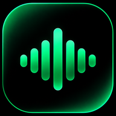

DVsomSEU UNIVERSO SONOROSua música.
Sua música.
Suas regras.
Explore por gênero
Ouça do seu jeito
Sound Studio
Equalizador e graves para seus arquivos de áudio.
Recentes
Buscar
Sua biblioteca
Arquivos importados ficam neste dispositivo, quando o armazenamento do navegador permite.
Favoritos
Playlists
Sound Studio
Bass Boost
0 dBEqualizador
O processamento funciona em arquivos locais compatíveis. Streams externos usam reprodução direta para evitar bloqueios de áudio. Reduza o volume ao elevar os graves.
Reproduzindo agora
Escolha uma música
0:000:00
Letras
Letras licenciadas não estão integradas.
Ouvir no serviço original